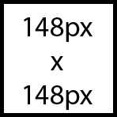

Flashing content
Designing with flashing content
Rapidly flashing lights or strobe-like effects in video, graphics or animation can cause photo-epileptic seizures in users with photosensitive epilepsy. Also known as convulsions, these are a sudden, uncontrolled electrical disturbance in the brain that can cause physical harm.
Flashing lights can trigger a seizure if:
- Lights flash more than 3 times per second.
- The flashing content is large enough. WCAG provides a complex formula here, but the rule of thumb is flashing content larger than 21,824 sq pixels is problematic. As a square, that works out to 148 pixels by 148 pixels: 
- The flashing content has high contrast. WCAG provides another complex formula here, but as an alternative recommends assessing flashing content using a tool such as the Photosensitive Epilepsy Analysis Tool (PEAT).
Because users may magnify the page and so enlarge the flashing area, it’s safest to limit the flashing of any size content to no more than three flashes in any 1-second period (Success Criterion 2.3.2: Three Flashes, Level AAA).
If you can’t edit the flashing source, don’t use it.
Allowing users to turn off the flashing content is not a viable option as the seizure could occur before the user has a chance to act.